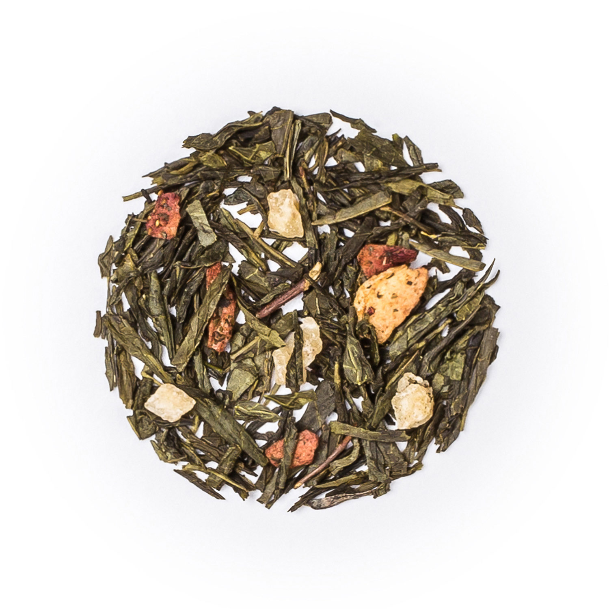

Se le atribuyen muchas características beneficiosas para la salud.
-Posee una gran capacidad antioxidante incrementando las defensas
-Combate el envejecimiento porque protege las células de la piel ( y también del cerebro y el hígado).
-Gracias a su contenido en flúor protege los dientes contra las caries.
-Ayuda a combatir el cansancio físico y mental, incrementando la capacidad de concentración y memoria.
-Al tener menor cantidad de teína es más recomendable para personas con nerviosismo.
-No tiene calorías y posee un suave efecto diurético, eliminando grasas.
Algunos de sus beneficios:
-Reduce las posibilidades de aparición de cáncer y enfermedades degenerativas.
-Contiene vitaminas A, C, E y Selenio.
-Mejora el funcionamiento del cerebro.
-Estimula la eliminación del colesterol LDL e incrementa el colesterol HDL considerado como “colesterol
bueno”.
-Elimina grasas, tiene un suave efecto diurético y estabiliza la insulina.
-Ayuda al tratamiento de la diabetes, ya que reduce los niveles de glucosa.
-Combate la aparición de caries debido a su contenido en fluor.
-El té verde ayuda a reducir el estrés y la ansiedad.

Posiblemente el menos conocido, pero el más apreciado por los entendidos.
Debido a su escaso fermentado, posee un aroma suave y sutil.
-Aumenta la capacidad de concentración, por lo que es perfecto para preparar exámenes.
-Es diurético y antioxidante.
-Gran cantidad de minerales como hierro, fósforo y magnésio.
-Ayuda a contrarrestar la aparición de caries por el elevado contenido en fluor.
-Protege la salud cardíaca.
Es bueno tomar este Té antes o después de una comida,
nuestro organismo comenzará a tener mejores digestiones.
Gracias a su proceso único de semifermentado,
la mitad que en el proceso de
fermentación del té negro, reúne características tanto del té verde como del negro.
-Ayuda con el tratamiento de la obesidad.
-Previene las enfermedades cardiovasculares y colabora con la lucha contra el envejecimiento gracias a
su contenido en antioxidantes.
-Estabiliza los niveles de colesterol.
-Contiene vitaminas y minerales.
-Incrementa las defensas.
¿Cuando lo tomamos? A media mañana!
Ya hemos pasado uno de los momentos más duros del día
y necesitamos una parada para recargar pilas y seguir a un buen ritmo hasta la pausa para comer.
Otro de los tipos más populares dentro de las distintas variedades. Posee un sabor
fuerte e intenso.
-Reduce el riesgo de ataques de corazón ya que contribuye a la mejora de la dilatación y contracción de
los vasos sanguíneos.
-Reduce los peligros de sufrir problemas cardiovasculares.
-Otro de los más populares efectos del té negro es que colabora significativamente con la eliminación de
líquidos del organismo.
¿Cuando es mejor tomarlo? Para empezar la mañana! Amanece un nuevo día y necesita un aporte extra de
energía para comenzar con buen pie. Con su alto contenido en teína es ideal para estimular el organismo
Gracias a la doble fermentación posee unas características muy favorables para el
organismo.
-Ayuda a reducir el peso y niveles de colesterol LDL.
-Tiene excelentes propiedades diuréticas.
-La ingesta acompañada con otros líquidos puede anular algunos de sus efectos.
-Función depurativa por su efecto sobre hígado y bazo.
-Resguarda y ayuda al metabolismo del hígado.
-Incrementa la potencia del sistema inmunológico.
-Ayuda en las digestiones pesadas.
-Mejora la circulación sanguínea.
-Tiene un efecto depurativo en el organismo.
Junto con el té azul se puede tomar a media mañana, porque es ligero y ayuda a reducir la grasa.